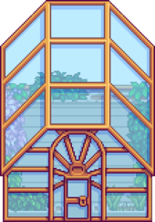
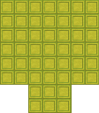
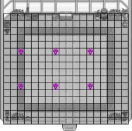
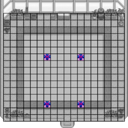
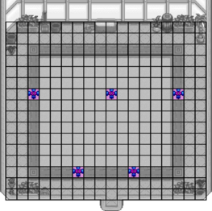

Invernadero:
El Invernadero es un edificio presente en la granja desde el principio. Inicialmente se encuentra en un estado de deterioro que lo hace inutilizable. Puede repararse completando el Lotes en la Alacena del Centro Cívico o comprándolo por  35 000 a través de un Formulario de proyectos de desarrollo comunitario de Joja. Una vez reparado, puede trasladarse en la Carpintería.
35 000 a través de un Formulario de proyectos de desarrollo comunitario de Joja. Una vez reparado, puede trasladarse en la Carpintería.
Conceptos básicos:
El interior del edificio presenta un terreno de tierra de 10 filas por 12 columnas. Allí, los cultivos pueden plantarse, cultivarse y cosecharse en cualquier época del año sin tener en cuenta las restricciones normales de las estaciones. No es necesario colocar espantapájaros en el invernadero para evitar que los cuervos se coman los cultivos. Los cultivos sí necesitan ser regados, incluso en días lluviosos. En la pared norte hay un abrevadero donde se puede rellenar la Regadera. Los Cultivos que vuelven a crecer volverán a crecer continuamente y no morirán al final de ninguna temporada.
Hay un borde de madera de una casilla de grosor alrededor del rectángulo de cultivo. Es posible colocar aspersores en este borde para regar cualquiera de las casillas del terreno de cultivo que estén a su alcance.
Entre el borde de madera y las paredes del Invernadero hay una región de dos casillas de espesor que no son aptas para cultivos, y poblada a lo largo de las paredes con elementos decorativos (plantas, herramientas, barriles, abrevaderos). Es posible plantar Árboles frutales en cualquier lugar de esta región que no esté ocupado por decoraciones, siempre que haya dos casillas entre los Árboles frutales. No se pueden plantar Árboles frutales en las esquinas del Invernadero. Ni la pared del invernadero ni el propio borde de madera impedirán el crecimiento de los árboles frutales, aunque debe mantenerse una separación de un espacio entre el árbol y cualquier elemento (como aspersores) que se coloque en el borde de madera o en la región exterior durante el tiempo de crecimiento del árbol.
Riego:
Aspersores:
Para utilizar aspersores automáticos para regar los cultivos, hay que sacrificar algunas casillas del suelo arable para colocar los aspersores. El área cultivable es demasiado grande para que cualquier aspersor pueda regar el centro desde cualquier borde. Además, la forma de 12 por 10 de la superficie cultivable no puede cubrirse sólo con las formas cuadradas del riego por aspersor.
Las múltiples posibilidades dan lugar a varias disposiciones óptimas de los aspersores que cubren las casillas de tierra y, al mismo tiempo, utilizan el menor número posible de aspersores en los lugares donde se puede plantar. Algunos aspersores se colocan inevitablemente en el borde de madera. Con los aspersores de iridio sólo hay que ocupar 4 espacios de cultivo (3,3%), mientras que con los aspersores de calidad se ocupan 12 espacios de cultivo (10%).
Invernadero:
¡Un lugar para plantar cultivos de cualquier estación durante todo el año!
| Información | |
|---|---|
| Coste: |
|
| Materiales: | Ninguno |
| Tamaño: |
7x6 + 3x2  |
16 Aspersores de calidad. 12 espacios de cultivo están ocupados por aspersores (-10%), lo que deja espacio para 108 cultivos.
6 Aspersores de iridio. Sólo 4 espacios de cultivo están ocupados por aspersores (-3,3%), lo que deja espacio para 116 cultivos.
4 Aspersores de iridio con la mejora de Boquilla a presión. Los aspersores sólo ocupan 2 espacios de cultivo, lo que deja espacio para 118 cultivos.
5 Aspersores de iridio con la mejora de Boquilla a presión. Un aspersor sólo ocupa 1 espacio de cultivo, lo que deja espacio para 119 cultivos.
Suelo Absorbente:
Una alternativa a los aspersores es el Suelo absorbente de lujo. Puede utilizarse en un cultivo en cualquier fase de crecimiento y tiene una probabilidad del 100% de permanecer regado durante la noche. Por tanto, elimina por completo la necesidad de aspersores, lo que libera espacio de cultivo. También es rentable, ya que el fertilizante sólo tiene que elaborarse una vez.
Árboles frutales
Los Árboles frutales pueden crecer en cualquier casilla de la zona exterior del área de cultivo que no esté ocupada por decoraciones, siempre que las demás casillas adyacentes a cada árbol estén vacías de objetos que el jugador haya colocado allí. Ni las paredes del invernadero ni el borde de madera alrededor del rectángulo de cultivo impiden por sí solos el crecimiento de los árboles frutales. Los árboles frutales no pueden plantarse en las esquinas del invernadero. En el invernadero, los árboles frutales siempre estarán con su apariencia de verano.
Es posible cultivar hasta 18 Árboles frutales dentro del invernadero. Una posible disposición óptima se muestra a continuación.

6 Aspersores de iridio y 18 Árboles frutales colocados para maximizar el espacio cultivable y el número de árboles.
Galería
| Estado inicial | Reparado | Interior | 18 Árboles |
|---|---|---|---|
 |
 |
 |
 |